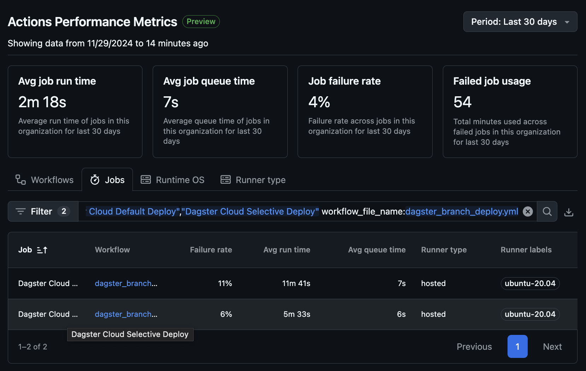
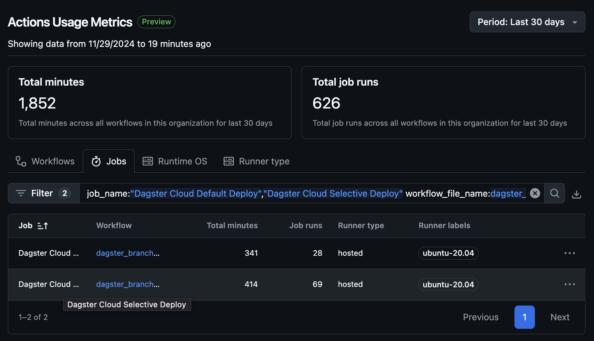

Selective Dagster Code Location Deployment with GitHub Actions
Aug 2024 ~ Flo Energy
Length: 2w (at 1.0 FTE)
Programming language: Bash
Data: GitHub pull request (PR) label names
Problem description:
Expedite Dagster branch deployment CI through a GitHub Actions job which dynamically selects
code locations for rollout based on PR labels
Approach:
The original Dagster CI workflow consisted of two parts: checking for changes in the Dagster
folder and provisioning all code locations to Dagster branch deployment if at least one
change is detected. A new job that allows for the selective deployment of individual code
locations was added to the CI because rolling out all code locations can be time-consuming
and redundant, especially since most PRs typically modify at most a few. This new job
executes when at least one PR label has the prefix CL-. If this condition is met,
the job retrieves all such labels, parses the code location names by removing the prefix,
generates a YAML configuration file containing the specified names, and publishes them to
Dagster cloud.
Results:
According to GitHub Actions insights, the new job runs twice as fast as the job deploying
all code locations, saving an average of 5 minutes per run. Additionally, the failure rate
is significantly lower (5% vs 11%). Assuming the selective deployment job did not exist, the
job deploying all code locations would have been used 69 extra times in the past 30 days, as
the "Actions Usage Metrics" screenshot shows. Multiplying this number by the average run time
difference of the two jobs (approximately 5 minutes) implies nearly 6 hours of saved compute
and developer downtime per month.

